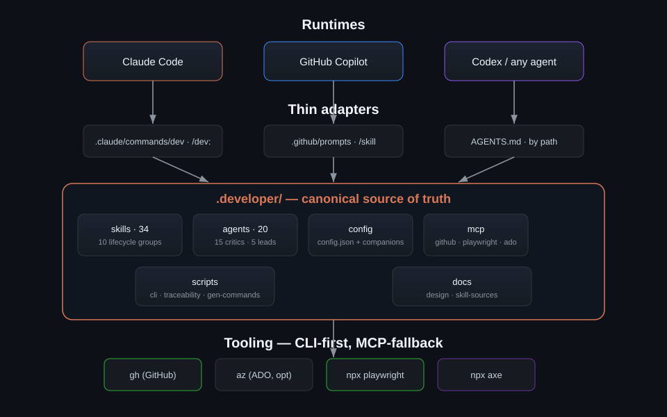
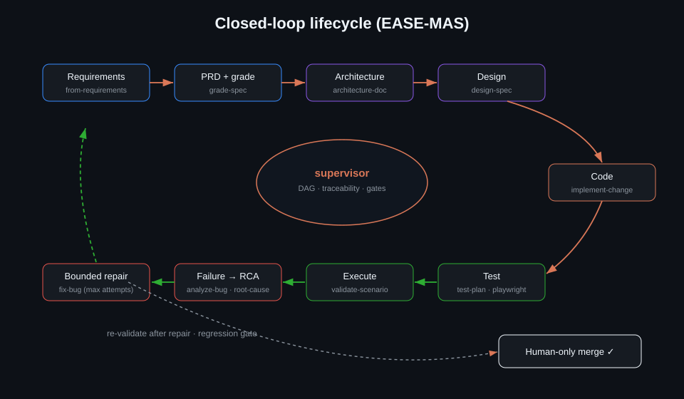
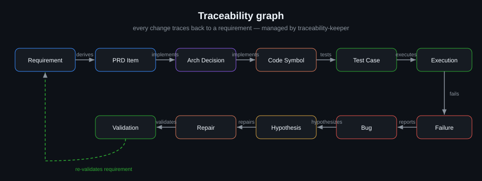
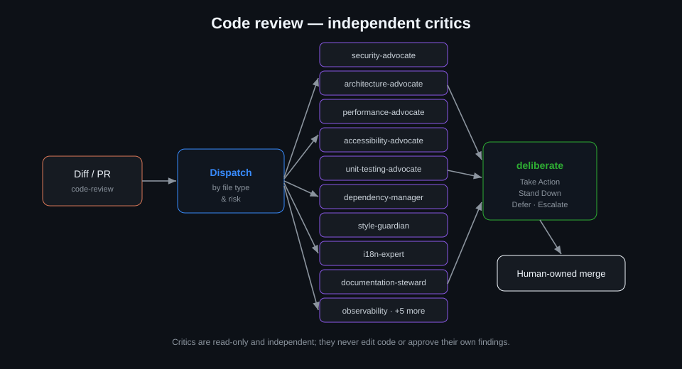

Architecture
The .developer/ tree is the single source of truth. Everything else — runtime adapters, CI, and docs — points back to it.
Layered overview
Each runtime invokes skills through a thin, generated adapter. Adapters carry no logic; they resolve to a canonical SKILL.md. Skills then drive external systems through a CLI-first, MCP-fallback tooling layer.

Closed-loop lifecycle (EASE-MAS)
A supervisor plans the work as a DAG and delegates each stage to the owning skill or lead. Failures feed root-cause analysis and a bounded repair loop; every repair is re-validated against a regression gate before a human merges.

Traceability graph
The traceability-keeper maintains a graph so every artifact links back to a requirement and forward to its tests and status. It is written by .developer/scripts/traceability.js and is queryable for coverage and change-impact.

Code-review critic pipeline
The code-review skill dispatches a diff to the relevant specialist critics by file type and risk. Critics are independent and read-only; their findings are weighed by deliberate into a single verdict.

deliberate → human-owned merge.Design principles
Ask, don't hallucinate
Skills load config/profile first and ask when intent is unclear rather than inventing requirements or values.
Human-owned merge
Autonomy ladder L0–L4; autonomous CI workflows are disabled by default and open draft PRs only.
Open-source only
No vendor-internal content — generic equivalents (GitHub Issues/PRs, WCAG, standard CI) throughout.
Minimal by default
Skills favor the smallest correct change; no gold-plating, no scope creep.